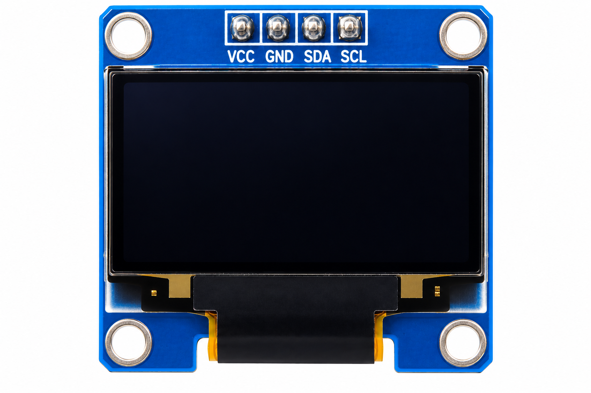

ESP32_CAM_Light_Activated_Camera.ino

ESP32-CAM Light-Activated Camera
To monitor ambient light using an LDR voltage divider and automatically capture a JPEG image with the ESP32-CAM when the light level changes significantly.
The ESP32-CAM reads the ambient light level through an LDR and 10KΩ resistor voltage divider connected to GPIO 2.
The ADC reading is converted into an approximate light percentage. When the measured light changes by 15 percentage points from the reference value, the OV2640 camera captures a JPEG image.
The OLED displays the current light percentage, monitoring status and capture count. Wi-Fi is not used in this Experiment because GPIO 2 is an ADC2 input.

Main controller and camera used to capture JPEG images.

Detects changes in ambient light level.

Forms the voltage divider with the LDR.

Displays the light level, monitoring status and capture count.

Used to upload the program to the ESP32-CAM.

Used to assemble the circuit.

Used for electrical connections.
| Component | Pin | ESP32-CAM Connection |
|---|---|---|
| LDR | One Leg | 3.3V |
| LDR | Other Leg | GPIO 2 |
| 10KΩ Resistor | One Leg | GPIO 2 |
| 10KΩ Resistor | Other Leg | GND |
| OLED Pin | ESP32-CAM Pin |
|---|---|
| VCC | 3.3V |
| GND | GND |
| SDA | GPIO 13 |
| SCL | GPIO 14 |
| USB-TTL Pin | ESP32-CAM Pin |
|---|---|
| +5V | 5V |
| GND | GND |
| TX | U0R / GPIO 3 |
| RX | U0T / GPIO 1 |

ESP32 Experiment · Code Review
ESP32-CAM LIGHT-ACTIVATED CAMERA · Select a step to see what each part of the ESP32 program does.
Choose a step. The matching code will light up on the left.
The program loads the camera, I²C, graphics and OLED libraries needed by the Experiment.
GPIO 2
reads the LDR voltage divider.
The reading is mapped to an approximate 0–100% light value.
A change of 15 percentage points triggers an image capture.
Try it: Change the light level around the LDR and watch the OLED and Serial Monitor when the light-change threshold is reached.
The OLED displays LIGHT ACTIVATED CAMERA, the current approximate light percentage, monitoring status and capture count.
The LDR is checked every 1 second and the current value is compared with the stored reference light value.
When the light changes by 15 percentage points, the camera captures a JPEG frame and the OLED briefly displays CAPTURE! with the updated count.
The JPEG frame is held temporarily in RAM and is not permanently saved in this version.
The ESP32-CAM LIGHT-ACTIVATED CAMERA Experiment was successfully implemented using an AI-Thinker ESP32-CAM, LDR voltage divider and SSD1306 OLED display.
The system continuously monitors ambient light and automatically captures a JPEG image whenever the configured light-change threshold is reached.